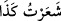
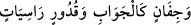

doğru yol üzere, vakur, kâmil ve olgun kimselerdir.
Kâfirlerin şâirleri, Rasûlullah (s.a.)’i ve ashâbını hicvederler, İslâm’ı karalamaya
çalışırlardı. Onlara Araplar’ın sefihleri tâbî olur, onların hicivlerini ezberlerler;
toplantı yerlerinde birbirlerine okurlar ve gülüşürlerdi.
İşte İbn Hatib’in Ravza’sında zikrettiği şu kıssa da bu anlamdadır: “Şâirlerden bir
grup halîfenin huzuruna gitti. Bir tufeylî onların peşine takıldı. Şâirler halifenin huzuruna
varınca sıra ile yazdıkları kasîdeleri okudular ve bahşişlerini aldılar. Tufeylî ortada
şaşkın bir halde kalakaldı. Ona: “Sen de şiirini oku.” denince “Ben şâir değilim. Allah
Teâlâ’nın “Şâirler(e gelince), onlara da sapıklar uyarlar.” buyurduğu gibi yolunu
şaşırmış bir adamım.” dedi. Halîfe tufeylînin bu cevabına çok güldü ve ona da bahşiş
verilmesini emretti.
Bazıları demiştir ki: Âyetin mânâsı, şâirlerin yolundan Hakk’ın yolundan sapanlar
gider ve onlardan olurlar, yoksa onların dışındaki rüşd ehlinden olanlar değil.
et-Te’vîlâtü’n-Necmiyye’de der ki: “İşaret etmektedir ki şâirler, konumları, ilgi
alanları, yönelişleri ve niyetlerinin menşei îtibarıyla mânâ, nazım, aruz ve kâfiye tertîbi,
cinas ve üslûb düzenlemede düşünce ve tefekküre daldıkları zaman, şeytanların iğva ve
saptırmalarına maruz kalırlar. Şeytanlar onları saçmalıklarına ve yalanlarına düşürür.”
el-Müfredât’ta der ki: “
” bir işin inceliğine muttali oldum/bildim, demektir.
Denilmiştir ki: Şâire ‘şâir’ isminin verilmesi, zekâsı ve bilgisinin inceliği sebebiyledir.
“Şiir” aslında ince bilginin ismidir. Örfte vezinli ve kafiyeli söz için isim olmuştur. Şâir
de bu işi meslek edinen kimsedir.
“Bilakis onu kendisi uydurmuştur; belki de o, şâirdir.” (el-Enbiyâ, 21/5) âyetini
müfessirlerin çoğu, onların Hz. Peygamber (s.a.)’in manzum ve kafiyeli bir şiir getirdiği
suçlamasında bulunmalarına haml etmişlerdir. Hattâ kâfirler, “
(Sebe’, 34/13)” ve “
(el-Mesed, 111/1)” âyetlerinde olduğu gibi
Kur’an’daki vezinle söylenmişe benzeyen her lafzı şiir olarak yorumladılar.
Muhakkıklardan birisi der ki: İnkârcılar Hz. Peygamber (a.s.)’a attıkları bu iftirâ ile
bu gâyeyi gütmemişlerdir. Çünkü bu kelâmın zâhirinden Kur’an’ın şiir üslubları üzere
olmadığı âşikârdır. Bunun böyle olduğunu, belâğat sahibi Araplar bir yana konuşmaktan
aciz yabancılar (Acem) bile bilir. Onların Hz. Peygamber (s.a.)’e “şâir” diye iftirâda
bulunmaktan maksadları, onu yalancılıkla itham etmektir. Çünkü şiir, bir nevi yalan, şâir
de yalancı sayılır. Hatta sahte delillere “şiir” denir. Bundan dolayı Allah Teâlâ,
şâirlerin genelini tanıtırken “Şâirler(e gelince), onlara da sapıklar uyarlar …”
buyurmuştur.”
Hamâse şârîhi İmam Merzûkî der ki: “Arablar nezdinde manzum söz söylemek daha
geride olduğu için şâirler, beliğ söz söyleyenlerden/hatiplerden geride kalmışlardır.
Çünkü onların melikleri İslâm’dan önce ve sonra hatiplikleri ile övünürler ve onu
önderliğin sebeplerinin en kâmili sayarlardı. Şiiri ise aşağılık görürlerdi. Çünkü şiir bir
kazanç elde etme ve ticaret vâsıtasıydı. Şiirde kendisinden bir menfaat umulan alçak